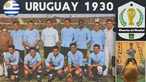
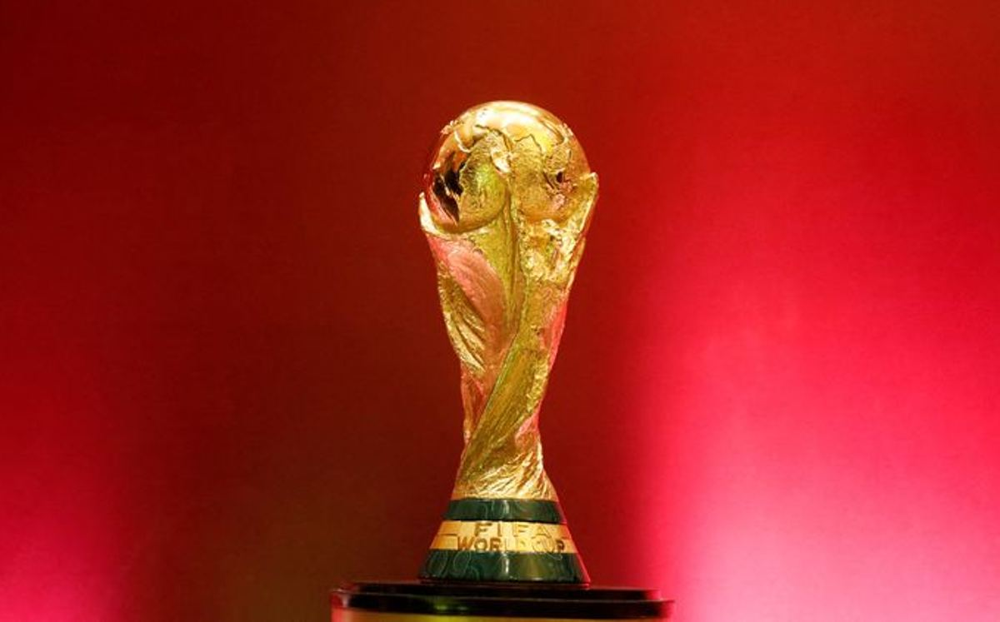
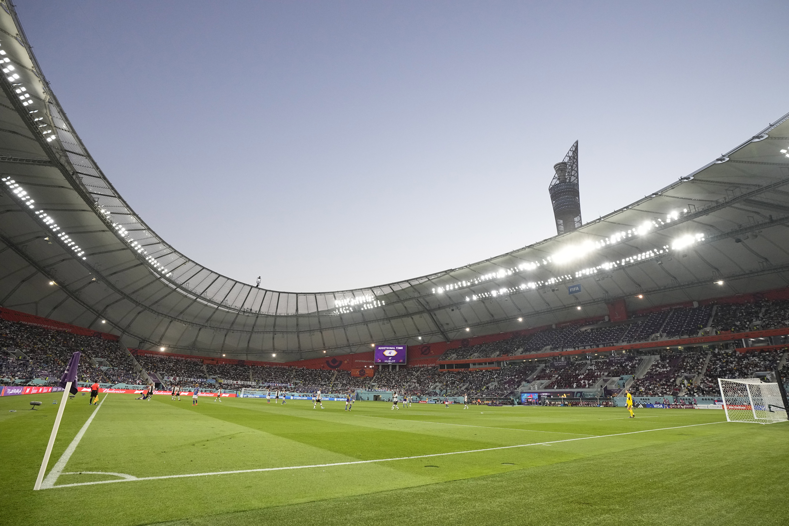
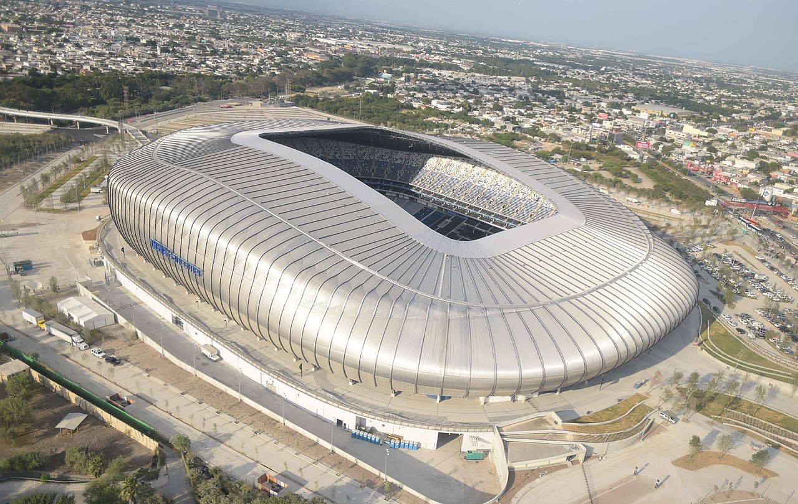

La Copa Mundial de la FIFA representa la máxima cumbre del deporte internacional, uniendo a miles de millones de aficionados en torno a un balón. El torneo no es solo un evento deportivo, sino una plataforma de intercambio cultural masivo que impulsa la economía, el turismo y la infraestructura de los países anfitriones.
¿Qué es la Copa Mundial de la FIFA? Es la máxima competición de fútbol masculino del planeta. Está organizada por la Federación Internacional de Fútbol Asociación (FIFA) y pone a competir a las selecciones nacionales más fuertes del mundo tras un riguroso proceso de eliminatorias continentales que dura cerca de tres años.
Importancia social del torneo: Rompe barreras culturales, une naciones bajo una misma pasión y ha sido el escenario de momentos históricos que trascienden el deporte, inspirando a generaciones enteras de jóvenes a practicar ejercicio.
Frecuencia y logística de realización: Se celebra rigurosamente cada cuatro años. Este lapso es necesario para dar espacio a los exigentes torneos de clasificación regionales de cada confederación (CONMEBOL, UEFA, CONCACAF, CAF, AFC y OFC). Solo se suspendió en los años 1942 y 1946 debido a los conflictos globales de la Segunda Guerra Mundial.
Sección 2. Los Inicios del Mundial en Detalle
A principios del siglo XX, el presidente de la FIFA, Jules Rimet, impulsó con fuerza la idea de crear un campeonato independiente de los Juegos Olímpicos. Su sueño se materializó en 1930, desafiando una fuerte crisis económica mundial y los complejos traslados marítimos de la época para los equipos europeos.
El torneo inaugural se jugó enteramente en la ciudad de Montevideo, Uruguay. No hubo fases clasificatorias; las 13 selecciones acudieron por invitación directa. Tras una competencia intensa, el Estadio Centenario presenció cómo la selección de Uruguay se coronaba como la primera campeona del mundo al derrotar a su eterno rival, Argentina, con un marcador final de 4-2.

Sección 3. Evolución de los Mundiales
El formato de la competencia ha vivido transformaciones profundas para adaptarse a la globalización. El torneo pasó de tener 13 invitados en 1930, a fijar un estándar de 16 escuadras durante varias décadas, expandirse a 24 equipos en España 1982 y consolidar el formato moderno de 32 selecciones en Francia 1998, el cual se mantuvo vigente hasta la Copa de Qatar 2022.
Tabla de Países Ganadores de la Copa del Mundo
País Selección
Títulos
Subcampeonatos
Ediciones de sus Títulos ganados
Brasil
5
2
1958, 1962, 1970, 1994, 2002
Alemania
4
4
1954, 1974, 1990, 2014
Italia
4
2
1934, 1938, 1982, 2006
Argentina
3
3
1978, 1986, 2022
Francia
2
2
1998, 2018
Uruguay
2
0
1930, 1950
Inglaterra
1
0
1966
España
1
0
2010
Grandes Hitos de la Historia (1930 - 2026)
1930 - El Origen en Uruguay: Nace el torneo más importante del fútbol con la participación exclusiva de 13 selecciones invitadas en Montevideo.
1950 - El Legendario Maracanazo: Uruguay desafía todos los pronósticos y vence a Brasil 2-1 en la final ante casi 200,000 espectadores en Río de Janeiro.
1970 - El Olimpo de Pelé en México: El torneo se transmite por primera vez a televisión a color a nivel internacional. Brasil gana su tercera copa y se queda el trofeo Jules Rimet.
1986 - La Consagración de Maradona: México se convierte en la primera sede de emergencia de la historia. Diego Maradona brilla anotando "La mano de Dios" y el "Gol del Siglo" contra Inglaterra.
1998 - Expansión y Modernidad: Francia organiza un torneo expandido a 32 selecciones, globalizando los cupos para África, Asia y Norteamérica.
2022 - El Trono de Messi en Qatar: El primer Mundial celebrado en el Medio Oriente cierra con una de las finales más espectaculares de la historia entre Argentina y Francia.
2026 - El Torneo Más Grande de la Historia: Comienza una nueva era expansiva de 48 naciones competidoras, rompiendo todos los récords previos de partidos y logística.
Sección 4. México en la Historia de los Mundiales
La historia del fútbol internacional no podría explicarse sin el protagonismo de México como un anfitrión legendario. El país ha rescatado la organización de torneos y ha brindado los escenarios ideales para la consagración de los dos futbolistas más grandes del siglo XX.
Mundial de México 1970: Recordado por el juego limpio y por albergar al espectacular Brasil de Pelé, considerado por expertos el mejor equipo de la historia. El Estadio Azteca fue testigo de la gran final.
Mundial de México 1986: Colombia debió renunciar a ser la sede por problemas económicos, por lo que México asumió el reto en tiempo récord. El torneo coronó a Diego Armando Maradona, quien firmó una de las actuaciones individuales más dominantes de la historia.
Gracias a la designación de este torneo norteamericano, México se consolida de forma única como el primer país del mundo en albergar tres Copas Mundiales de la FIFA en su historia, un hito que demuestra su pasión y confiabilidad organizativa.

Sección 5. Mundial México 2026
La edición del Mundial 2026 representa la transformación competitiva y logística más radical de la FIFA en los últimos treinta años, diseñada para incluir a más países en la máxima fiesta del fútbol.
Sede Compartida de Tres Naciones: La organización se distribuye conjuntamente entre Estados Unidos, Canadá y México, abarcando una extensión territorial inédita para un solo torneo de fútbol.
Formato Gigante de 48 Selecciones: El número de equipos aumenta drásticamente de 32 a 48. Las naciones clasificadas se dividen en 12 grupos de 4 integrantes cada uno para la ronda inicial.
104 Partidos Totales: El calendario se expande de los tradicionales 64 juegos a un total de 104 encuentros, añadiendo una ronda eliminatoria extra completa: los Dieciseisavos de Final.

Galería de las 3 Sedes Oficiales en México
México recibirá un total de 13 partidos distribuidos estratégicamente en sus tres estadios avalados por la FIFA:
Estadio Azteca (CDMX) Capacidad: 87,500 espectadores. Recibirá 5 partidos, incluyendo el gran Juego Inaugural de la Selección Mexicana (11 de junio) y dos encuentros de eliminación directa.

Estadio BBVA (Monterrey) Capacidad: 53,500 espectadores. El "Gigante de Acero" recibirá 4 partidos del torneo, albergando duelos clave de la fase de grupos y un juego de Dieciseisavos de Final.
Estadio Akron (Guadalajara) Capacidad: 48,000 espectadores. Este moderno recinto en forma de volcán albergará 4 encuentros de la fase de grupos, destacando el segundo juego de la Selección Mexicana.
Grandes Momentos de la Historia (Video)
Revive las jugadas, los goles y las emociones más icónicas que han dejado los torneos mundiales anteriores en la memoria de los aficionados:
Sección 6. Conclusiones
La Copa Mundial de la FIFA 2026 marcará un antes y un después en la historia del deporte rey. Al expandir el cupo a 48 naciones, la FIFA no solo amplía el espectáculo, sino que democratiza la oportunidad para que países emergentes vivan el sueño mundialista en directo. Para México, este torneo representa la consolidación definitiva de su herencia futbolística, demostrando al mundo que su calidez, sus imponentes estadios y su capacidad organizativa siguen estando al más alto nivel internacional.